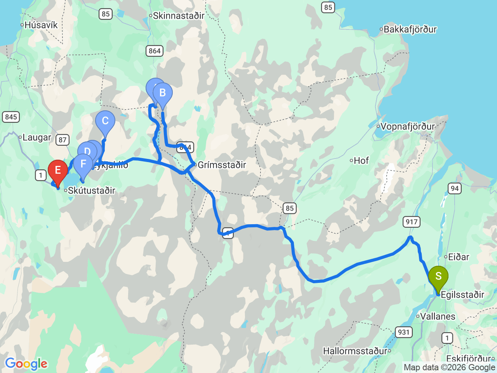
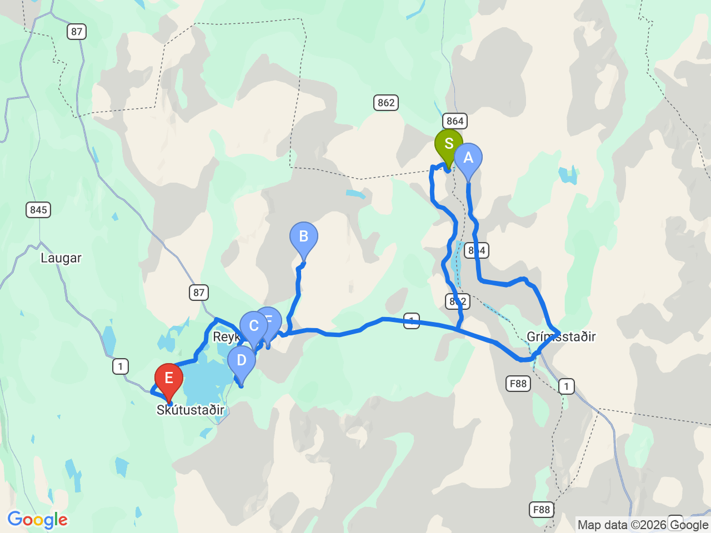

Day 11 · 2026-08-26（三）
冰島環島 Day 6/11
米湖火山地熱奇景：黛提瀑布・克拉夫拉・黑色城堡
探索米湖周邊活躍的火山地質景觀，瀑布、熔岩洞穴與火山口一次收集
米湖火山地質全程路線（含出發旅館）

米湖景點聚焦圖（不含出發旅館）

行程明細DAY 11
| 時間 | 地點 | 地點 (英文) | 價格 | 預計停留(分鐘) | 備註 |
|---|---|---|---|---|---|
| 08:30 | 飯店出發 | 沿 1 號公路及 862 號公路前往黛提瀑布 | |||
| 10:15 | 黛提瀑布 | ADettifoss | 免費 | 45–60 | 歐洲水量最大的瀑布之一，氣勢磅礡，建議從西岸（862 號公路）前往，步道完善 |
| 11:20 | 賽爾佛斯瀑布 | BSelfoss Waterfall | 免費 | 20–30 | 距離 Dettifoss 步行約 10–15 分鐘，上游瀑布群景觀優美，通常與 Dettifoss 一起參觀 |
| 12:25 | 克拉夫拉火山 | CKrafla Volcano | 1000 | 45–60 | 活躍火山地區，可步行至維提火山口（Víti Crater），欣賞火山口湖與地熱景觀 |
| 13:35 | 洞穴溫泉 | DGrjótagjá Cave | 免費 | 20–30 | 著名熔岩洞穴溫泉，曾為《權力遊戲》拍攝場景，目前禁止泡湯，可欣賞洞穴與湛藍泉水 |
| 14:10 | 黑色城堡 | FDimmuborgir Lava Field | 免費 | 45–60 | 奇特熔岩地形與天然岩洞，有「黑色城堡」之稱，是冰島最具代表性的火山熔岩景觀之一 |
| 15:10 | 米湖溫泉 | GMývatn Nature Baths | 約 USD 67-85／人（Kjarni/Kvika 兩級，另有頂級方案） | 120 | 天然地熱溫泉，鄰近米湖 Reykjahlíð，泡湯放鬆為這天火山地質行程收尾；線上訂票 |
| 景點備案：惠爾山地熱區 | 1200 | 60–90 | 巨大的火山渣錐，可登頂環繞火山口一圈，俯瞰米湖地區全景；Hverfjall (Hverfell)；已改排米湖溫泉收尾，行程有餘裕再考慮加碼 | ||
| 景點備案：偽火山口群 | 免費 | 30–45 | 米湖畔著名的偽火山口群，由熔岩遇水爆炸形成，可沿步道環湖散步；Skútustaðagígar；已改排米湖溫泉收尾，行程有餘裕再考慮加碼 | ||
| 17:40 | 抵達 Laxá Hótel Check-in |
每日三餐
早餐
飯店早餐Lake Hótel Egilsstaðir
飯店含早餐，08:30出發前先吃飽再上路
午餐
未安排
米湖周邊解決，餐廳尚未確認
晚餐
未安排
Laxá Hótel 附近解決，餐廳尚未確認
住宿資訊
本日預估開車里程
222km
Egilsstaðir → Dettifoss 145km → Selfoss瀑布 1km → Krafla 50km → Grjótagjá 15km → Dimmuborgir 5km → Mývatn Nature Baths 3km → Laxá Hótel 3km（部分路段為概估）
該區域加油站
- N1 Mývatn (Reykjahlíð)米湖區域24小時營業，油品補給首選